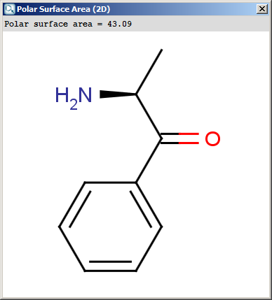
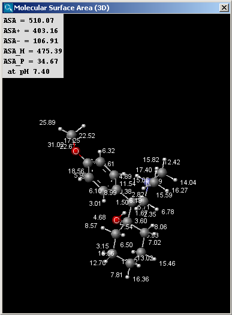

Geometry
The Topology Analysis plugin provides characteristic values
related to the topological structure of a molecule. These options can be set
in the Topology Analysis Options panel, here shown with the Atom/bond tab opened:
Atom/bond
- Aliphatic atom count: number of atoms in the molecule
having no aromatic bond (excluding hydrogens).
- Aliphatic bond count: number of non-aromatic bonds in
the molecule (excluding bonds of hydrogen atoms).
- Aromatic atom count: number of atoms in the molecule
having aromatic bonds.
- Aromatic bond count: number of aromatic bonds in the
molecule.
- Asymmetric atom count: the number of asymmetric atoms
(having four different ligands).
- Atom count: number of atoms in the molecule including
hydrogens.
- Bond count: number of bonds in the molecule includingbonds of
hydrogen atoms.
- Chain atom count: number of chain atoms (non-ring atoms
excluding hydrogens).
- Chain bond count: number of chain bonds (non-ring bonds
excluding bonds of hydrogen atoms).
- Chiral center count: the number of tetrahedral
stereogenic centers. This function identifies two chiral centers in
1,4-dimethylcyclohexane, which does not contain asymmetric atoms.
- Ring atom count: number of ring atoms.
- Ring bond count: number of ring bonds.
- Rotatable bond count: number of rotatable bonds in the
molecule. Unsaturated bonds, and single bonds connected to hydrogens or
terminal atoms, single bonds of amides, sulphonamides and those
connecting two hindered aromatic rings (having at least three ortho
substituents) are considered non-rotatable.
- Stereo double bond count: number of double bonds with defined stereochemistry.
Ring
- Aliphatic ring count: number of those rings in the
molecule that have non-aromatic bonds (SSSR based).
- Aromatic ring count: number of aromatic rings in the
molecule. This number is calculated from the smallest set of smallest
aromatic rings (SSSAR), which might contain rings which are not part of
the standard SSSR ring set. As a consequence, the sum of the aliphatic
ring count and the aromatic ring count can sometimes be greater than the
ring count value. The difference is the signal of a macroaromatic ring
system.
- Carbo ring count: number of rings containing only carbon atoms.
- Carboaliphatic ring count: number of aliphatic rings containing
only carbon atoms.
- Carbooaromatic ring count: number of aromatic rings containing
only carbon atoms (SSSAR based).
- Fused aliphatic ring count: number of aliphatic rings
having common bonds with other rings.
- Fused aromatic ring count: number of aromatic rings
having common bonds with other rings.
- Fused ring count: number of fused rings in the molecule
(having common bonds).
- Hetero ring count: number of rings containing hetero atom(s).
- Heteroaromatic ring count: number of aromatic
heterocycles in the molecule.
- Largest ring size: size of the largest ring in the
molecule.
- Largest ring system size: number of rings in the largest ring system.
- Ring count: number of rings in the molecule. This
calculation is based on SSSR (Smallest Set of Smallest Rings).
- Ring system count: number of disjunct ring systems.
- Smallest ring size: size of the smallest ring in the
molecule.
- Smallest ring system size: number of rings in the smallest ring system.
Path based
- Platt index: sum of the edge degrees of a molecular
graph.
- Randic index: harmonic sum of the geometric means of
the node degrees for each edge.
Distance based
- Balaban index: the Balaban distance connectivity of the
molecule, which is the average distance sum connectivity.
- Distance degree: the sum of the corresponding row
values in the distance matrix for each atom.
- Eccentricity: the greatest value in the corresponding
row of the distance matrix for each atom.
- Harary index: half-sum of the off-diagonal elements of
the reciprocal molecular distance matrix of the molecule.
- Hyper Wiener index: a variant of the Wiener index.
- Szeged index: The Szeged index extends the Wiener index
for cyclic graphs by counting the number of atoms on both sides of each
bond (those atoms only which are nearer to the given side of the bond
than to the other), and sum these counts.
- Wiener index: the average topological atom distance
(half of the sum of all atom distances) in the molecule.
- Wiener polarity: the number of 3 bond length distances
in the molecule.
Other
- Cyclomatic number: the smallest number of bonds which
must be removed so that no circuit remains. Also known as circuit
rank.
- Fragment count: number of fragments in the sketch.
- Steric effect index: topological steric effect index
(TSEI) of an atom calculated from the covalent radii values and
topological distances. The stericEffectIndex is related to the steric
hindrance of the given atom.
The result is shown in a separate window:
The contents of text field can be copied to the clipboard as text,
the structure fields offers a MarvinView context menu.
The Geometry plugin provides characteristic values related to the
geometrical structure of a molecule. It can calculate steric hindrance and Dreiding
energy. The calculation can predict and use the lowest energy conformer
of the input structure.
The calculation and the display options can be set in the Geometry
Options panel:
- Type
- Dreiding energy: calculates the energy related to the 3D structure (conformation) of the molecule using dreiding force field.
- MMFF94 energy: calculates the energy related to the 3D structure (conformation) of the molecule using MMFF94 force field.
- Steric hindrance: steric hindrance of an atom calculated from
the covalent radii values and geometrical distances.
- Minimal projection area: calculates the minimum of projection
areas of the conformer, based on the van der Waals radius (in Å2).
- Maximal projection area: calculates the maximum of projection areas
of the conformer, based on the van der Waals radius (in Å2).
- Minimal projection radius: calculates the radius for the minimal
projection area of the conformer (in Å).
- Maximal projection radius: calculates the radius for the
maximal projection area of the conformer (in Å).
- Maximal distance perpendicular to the min projection: calculates the maximal extension of the conformer perpendicular to the minimal projection area (in Å).
- Maximal distance perpendicular to the max projection: calculates the maximal extension of the conformer perpendicular to the maximal projection area (in Å).
- van der Waals volume: calculates the van der Waals volume of the conformer (in Å3).
- Energy unit: gives dreiding energy in kcal/mol or kJ/mol.
- Decimal places:setting the number of decimal places with which the
result value is given.
- Radius scale factor: atom radii from the periodic system are multiplied
by this number.
- Set MMFF94 optimalization: The structure is optimized before MMFF94 energy calculation.
- Set projection optimalization The structure is optimized before projection area and projection radius calculation(s).
- Calculate for lowest energy conformer:
- If molecule is in 2D: the lowest energy conformer of the 2D molecule is generated, and its parameters
calculated. 3D input molecules are considered in the given conformation.
- Never: the input molecule is used for calculation.
- Always: the lowest energy conformer is generated (3D and 2D molecules as well),
and its geometry parameters calculated.
- Optimization limit:
- Very loose
- Normal
- Strict
- Very strict
Polar surface area (PSA) is formed by polar atoms of a molecule.
It is a descriptor that shows good correlation with passive molecular
transport through membranes, and so allows estimation of transport
properties of drugs. Estimation of topoligical polar surface area (TPSA)
is based on the method given in this paper. The
method provides results which are practically identical with the 3D PSA,
while calculation time of TPSA is approximately 100-times faster. This
method is more suitable for fast bioavailability screening of large
virtual libraries. The TPSA value can be calculated both for the neutral form and
the major microspecies.
The calculation and the display options can be set in the Polar Surface Area (2D)
Options panel:
- Decimal places:setting the number of decimal places with which
the result values are given.
- Exclude sulfur atoms from calculation
- Exclude phosphorus atoms from calculation
- Take major microspecies at pH: calculates the polar surface area
for the major microspecies present at the given pH.
The result appears in a separate window, if several structures were drawn
navigation is possible with a scroll bar:
|  |
 |
The contents of the text field can be copied to the clipboard by Ctrl+C, the
structure field offers a context menu from MarvinView.
There are two types of available molecular surface area
calculations, van der Waals and solvent accessible. Calculation method
is based on the publication of Ferrara et al.
The calculation and the display options can be set in the Molecular Surface Area (3D)
Options panel:
- Decimal places:setting the number of decimal places with which the result values are given.
- Surface Area
- Van der Waals: calculates the van der Waals surface of the molecule (in Å2).
- Solvent Accessible: calculates the solvent accessible surface of the molecule (in Å2).
- Solvent radius: setting here the radius of the solvent molecule (by default water, 1.4 Å).
- Show surface area increments: the increment by each atom is displayed.
- Take major microspecies at pH: the surface area of the major
microspecies present at the given pH is calculated.
The result window contains the area values and the molecule in 3D view.
The left picture shows the van der Waals surface and the right window the solvent accessible surface area:
 |
 |
The values indicated in the text field of the result window of the solvent
accessible surface area calculations are the following (all in Å2):
- ASA: solvent accessible surface area calculated using the radius of
the solvent (1.4 Å for the water molecule).
- ASA+: solvent accessible surface area of all atoms with positive partial
charge (strictly greater than 0).
- ASA-: solvent accessible surface area of all atoms with negative partial
charge (strictly less than 0).
- ASA_H: solvent accessible surface area of all hydrophobic
(|qi|<0.125) atoms (|qi| is the absolute value of the partial charge of the atom).
- ASA_P: solvent accessible surface area of all polar (|qi|>0.125)
atoms (|qi| is the absolute value of the partial charge of the atom).
References
- Randic,M., Chem. Phys. Lett., 1993, 211, pp 478-483;
doi
- Lucic, B., Lukovits, I., Nikolic, S., Trinajstic, N., J. Chem. Inf. Comput.
Sci., 2001, 41(3), pp 527-535; doi
- Wiener, H., J. Am. Chem. Soc., 1947, 69(1) pp 17 - 20;
doi
- Ertl, P., Rohde, B., Selzer, P., J.
Med. Chem., 2000, 43, pp. 3714-3717; doi
- Ferrara, P,. Apostolakis J., Caflisch A., Proteins
2002, 46, 24-33; doi